ECO·NOMIA: As Regras da Casa
Centro Cultural de Cascais, Fundação D. Luís I, 2026
Drawings from the Morfometrias series, Naturfatura sculptures, three large-format prints and the Dendrogram, in a new configuration, shared the ground floor of the Fundação D. Luís I on the principle of consociation: distinct forms and materials cohabiting the same house.
The digital catalogue, with texts by Salvato Teles de Menezes and Inês Ferreira-Norman and photographs of the works, can be viewed here.
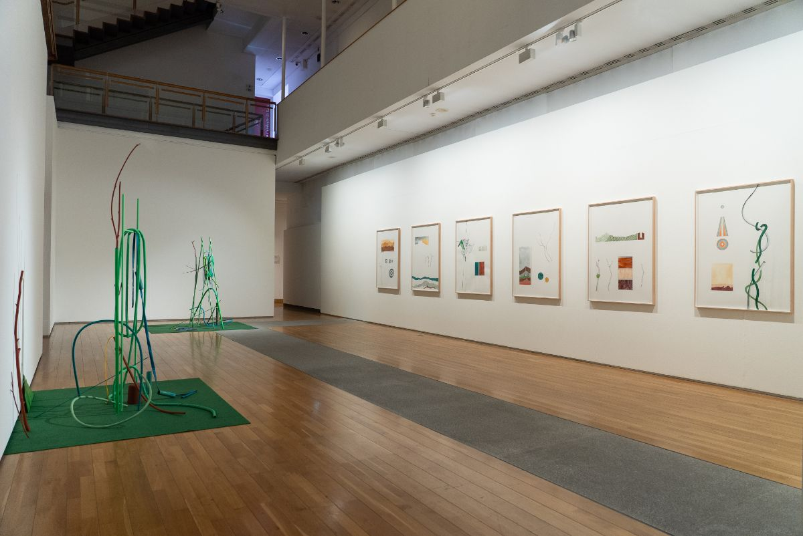
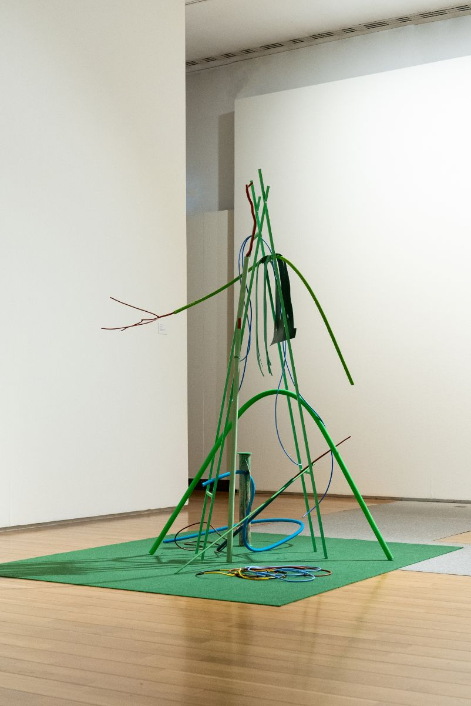
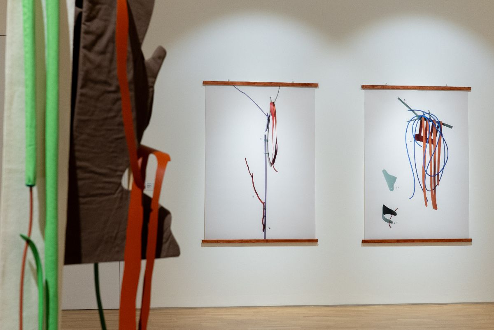
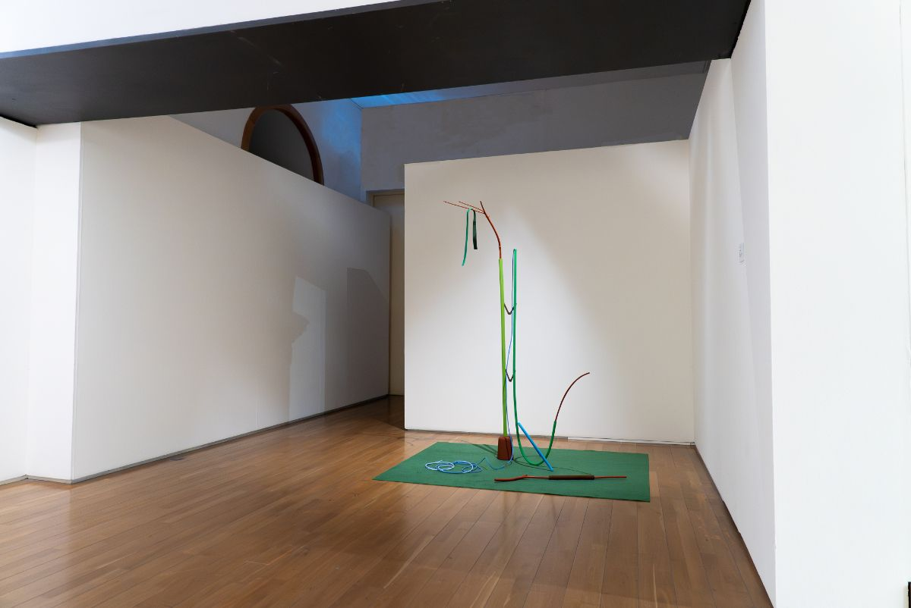
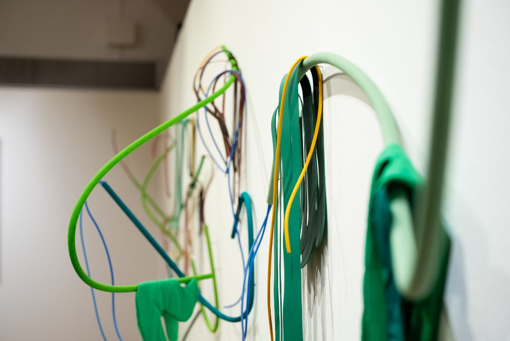
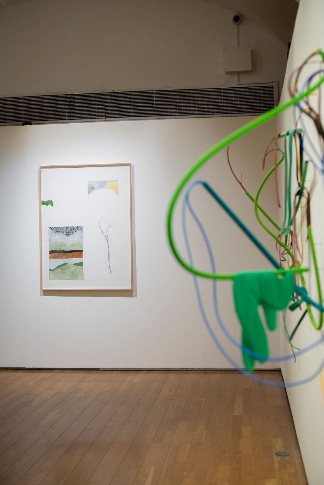
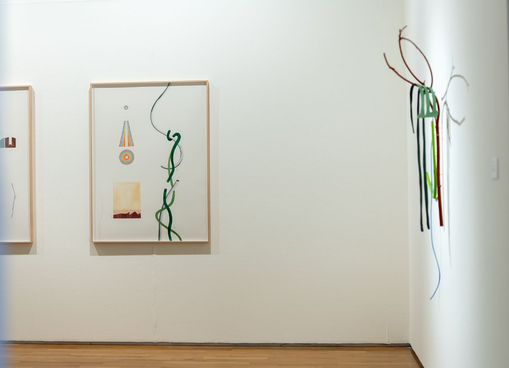
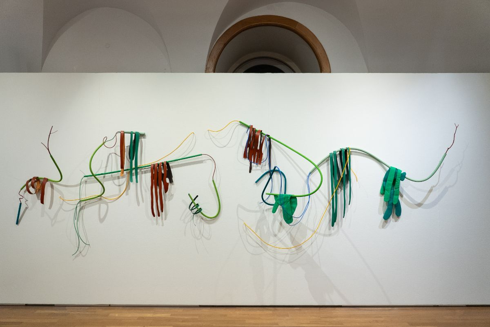
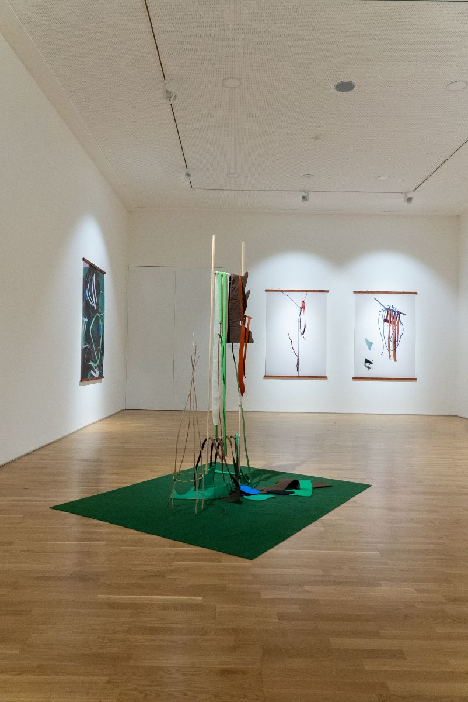
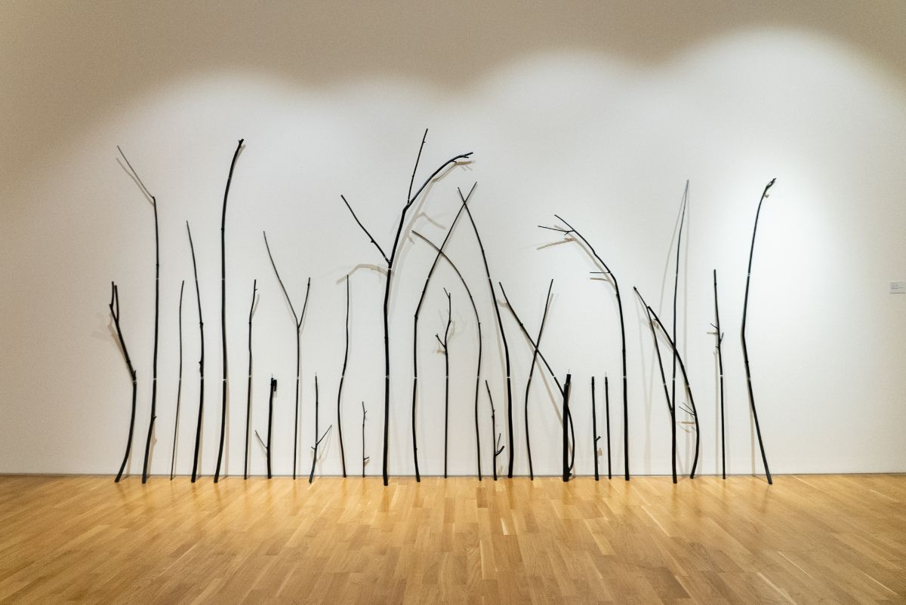
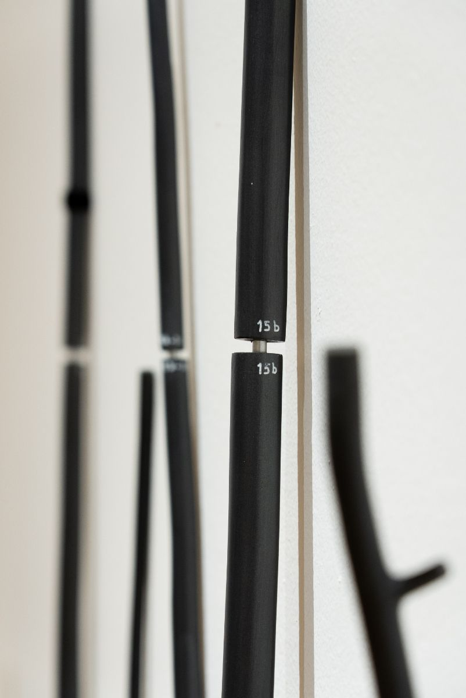
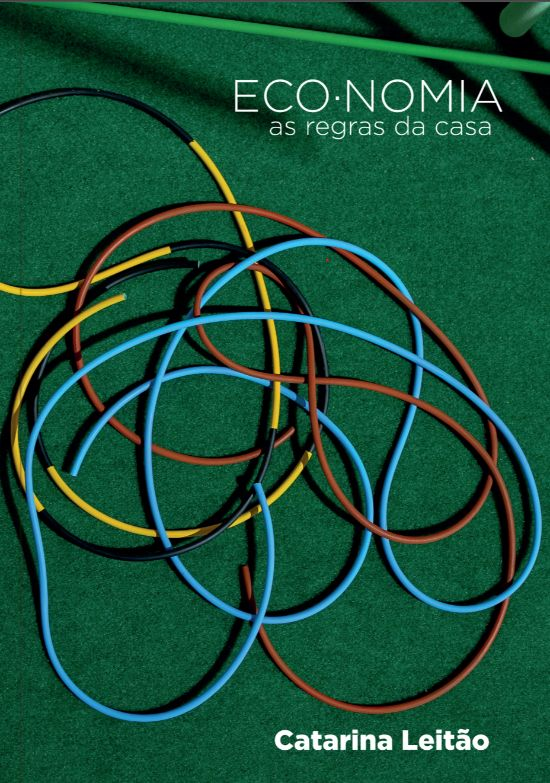